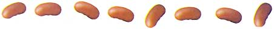
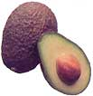
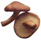

The cholesterol story began in 1951, when the Pentagon sent pathologists to Korea to study the bodies of servicemen killed in the war there.
Although almost no one under 35 dies of coronary heart disease, autopsies revealed that more than 75 percent of the soldiers, average age 21, had yellow deposits of atherosclerotic plaque on their artery walls. The Army pathologists' reports shocked the medical community because, until these autopsies, doctors had assumed these artery-clogging deposits were found only in much older men.
Soon after, cholesterol was identified as a major contributor to the buildup of plaque and to the risk of heart disease. More recently, scientists have discovered that for every 1 percent drop in cholesterol level, there is a 2 percent decrease in heart attack risk.
The total cholesterol level of the average American is higher than 200 milligrams per deciliter (mg/dl) of blood. Because heart attack risk rises sharply above that level, the American Heart Association urges everyone to take measures to reduce cholesterol if it's anywhere near that high.
How far below 200 should you go to feel that your risk is significantly less? Research suggests that very low cholesterol levels, below 150 or so, increase risk of death from other causes, including liver cancer, lung disease and certain kinds of stroke. My reaction is that people should strive for a cholesterol range of 170 to 190.
To complicate matters, there are two kinds of cholesterol: low-density lipoproteins (LDL), which increase the risk of heart attack, and high density lipoproteins (HDL), which actually reduce it. You want to get your total cholesterol down below 190. But if you have high cholesterol, your doctor may focus on your LDL levels and have you work to reduce those, since the "bad" kind is most dearly linked to heart disease.
An estimated 25 percent of Americans have cholesterol levels high enough to place them at risk for heart attack; 10 percent have levels so high that doctors prescribe aggressive cholesterol-lowering drug treatments. But these are powerful drugs that can have negative side effects - for example, the drug Baycol was voluntarily withdrawn from the market because of reports of serious, sometimes fatal, muscle reaction. Doctors are far less likely to tell you Green Pharmacy ways to reduce your heart disease risk.
Any, and probably all, plant fibers can lower cholesterol. That means eating a diet that includes lots of fruits, vegetables and whole grains, with a minimum of fats.
In one study, a high fiber supplement (Fibercel) was added to the diets of laboratory hamsters, enough to comprise 5 percent of their daily calorie intake. The Fibercel lowered their total cholesterol by 42 percent and their "bad" LDL cholesterol by 69 percent. Beneficial HDL increased 16 percent.
Oat bran has gotten a lot of publicity as a cholesterol reducer, but it's just one of many high-fiber foods and is far from the best fiber for lowering cholesterol. Hamsters fed a diet with 5 percent w oat bran showed a reduction in total cholesterol and LDL of only 19 and 29 percent, respectfully, a weak showing compared with that obtained with Fibercel.
The components of oat bran that lower cholesterol are beta-glucans. Again, oat bran is not the richest source. Barley contains up to three times more beta-glucans than oats. Beans are also a significant source.
Often isn't necessary to resort to drugs to lower cholesterol. Here are just some of the foods and herbs that can help bring your levels down:
Carrot (Daucus carota, and other foods containing pectin) Scottish studies showed that over a period of three weeks, a daily snack of two carrots lowered cholesterol levels by 10 to 20 percent in study participants. Carrots are high in the fiber pectin. Other good sources include apples and the white inner layer of citrus rinds. Enjoy these foods daily.
Juicing is big these days, so I'd like to offer a little advice. If you want to consume fruits and vegetables in beverage form, just whir them in a blender. Using a juicer, you extract most of the fiber, leaving only 10 percent of the cholesterol-lowering pectin.
University of Florida scientists reported that 3 tablespoons of grapefruit pectin daily, taken in capsules or as a food additive, can lower cholesterol by about 8 percent. Be aware that this type of fiber interferes with the uptake of important nutrients, including beta-carotene, boron, calcium, copper, iron and zinc. This is less of a problem when you consume the whole plant, because the plant supplies extra nutrients. If you take pectin capsules, eat your fruits and vegetables at a later meal so you don't trigger deficiencies.
Avocado (Persea americana). Avocado is one of the highest-fat fruits, so people with heart disease often avoid it. But according to a report in the Lawrence Review of Natural Products, a respected newsletter, avocado can help reduce cholesterol. In one study, women were given a choice of a diet high in mono-unsaturated fats (olive oil) with avocado or a diet rich in complex carbohydrates (starches and sugars). After six weeks, those on the olive oil/avocado diet showed an 8.2 percent reduction in cholesterol.
I'm not saying you should cut back on complex carbohydrates, which are important to a healthy diet: I am suggesting you enjoy an occasional avocado. It contains some unique chemicals that you might not be getting else where.
Beans (Phaseolus, various species). Beans are high in fiber and low in fat just the ticket for lowering cholesterol. They contain lecithin, a nutrient that also helps cut cholesterol. One study showed that a cup and a half of dried lentils or kidney beans a day, about the amount in a bowl of bean soup, can lower total cholesterol levels by 19 percent.
Garlic (Allium sativum) and onion (A. cepa). Many studies show that the equivalent of one clove of garlic a day (or half an onion) lowers total cholesterol by 10 to 15percent in most people. Garlic is an approved remedy in Europe for cardiovascular conditions, especially high cholesterol.
In another study, 2 to 3 tablespoons of onion oil a day helped lower choles terol in about half of people
with moderately high cholesterol. Their blood cholesterol levels fell 7 to 33 percent while they were taking the onion oil.
Nuts You might think people with high cholesterol should avoid high-fat nuts, but a study of more than 25,000 Americans showed that those who eat the most nuts are the least likely to be obese. I wouldn't recommend nuts to those with heart disease or high blood pressure. But for reasonably healthy folks, nuts don't seem to do harm and are better than too much meat.
High nut consumption was also associated with a lower incidence of fatal and nonfatal heart attacks. This should interest anyone at risk from high cholesterol.
Safflower (Carthamus tinctorius) One study showed that switching to safflower oil for eight weeks reduced total serum cholesterol levels by 9 to 15 percent and LDL cholesterol by 12 to 20 percent.
Sesame (Sesamum indicum) All plants contain phytosterols, compounds that can be absorbed into the bloodstream, nudging out some of the cholesterol that's there. In my database, the food that shows up highest in phytosterols (based on dry weight) is sesame seeds. Other foods containing high amounts of phytosterols include lettuce, sunflower seeds, hazelnuts, cucumbers, asparagus, okra, cauliflower, spinach, figs, onions, strawberries, pumpkin, squash, radishes, apricots, tomatoes, celery and ginger.
Shiitake (Lentinus edodes) These delicious mushrooms contain the compound lentinan. According to the Lawrence Review, lentinan has cholesterol-lowering action, along with antitumor, antiviral and immune-stimulating effects. In experiments, animals given a low dose of a compound related to lentinan had a 25 percent reduction in cholesterol levels.
Many foods and herbs lower cholesterol. Why not mix them in various combinations to create a healthy, tasty diet that gets those numbers where you want them to be?
Look for more excerpts from James Duke's The Green Pharmacy in future issues of Mother Earth News. One of the world's leading authorities on herbal healing, Duke is author of The Green Pharmacy Anti-Aging Prescriptions (Rodale Press). Active in rain forest preservation, he regularly leads ecotours in the Amazon. Contact him at jimduke@greenpharmacy.com
|
 FILE PHOTOS Beans are high in fiber and low in fat - just the ticket for lowering cholesterol. |
 FILE PHOTOS Eating an occasional avocado can help reduce cholesterol. |
 FILE PHOTOS Shiitake mushrooms contain a cholesterol-lowering compound. |